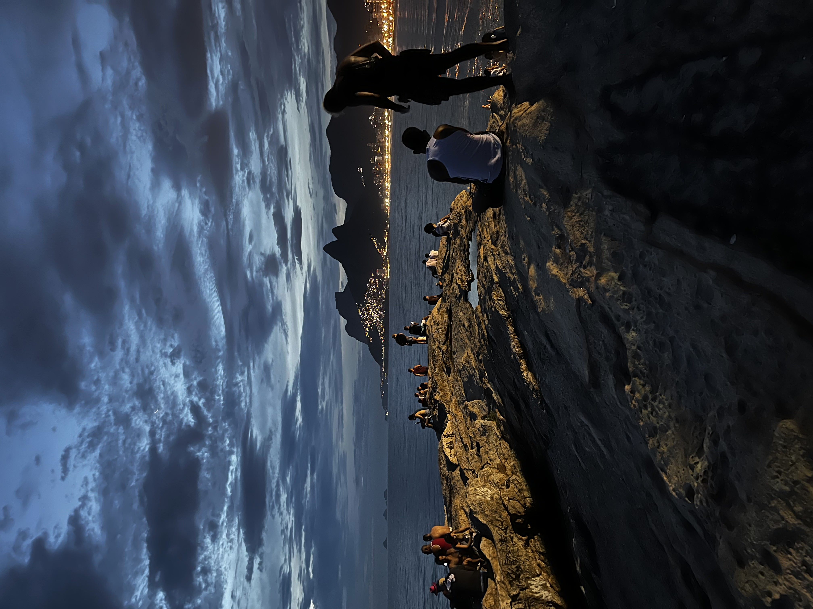

- 

HTML
*
CSS
*
JavaScript
*
Python
*
IT Support
That's a great question! Let's start from the beginning... My story begins before my birth when my Mother decided to migrate from Ecuador to the United States at the age of 19. With nothing to her name and not being able to speak English she managed to make a life for herself. 2 years later she had me, and was the best Mother I could have asked for who managed to raise me all by herself in a foreign country where she had no help from anyone. As the years passed we grew supporting one another, I taught her English and she supported me through school to the best of her ability and provided for me. Eventually my step father came into our lives and he became the father I never thought I would have. Although we weren't the wealthiest we made the most of what we had and we were happy. Fast forward to my 2005, my parents had set money aside to buy to me a Gamebody Advance for my birthday, little did I know it would be my introductory to the world of Technology. From there my obsession with technology began, I would save up every single dollar I would get to buy the next newest video games and consoles. Fast forward again to 2012 and I had saved up enough money to build a computer and pieced it together once I had received all the parts, this was also the time that Minecraft started gaining popularity and it caught my attention. A year later I found myself creating and hosting a server out of my bedroom for my entire middle school, I got sucked into countless hours fiddeling with the Java code of the all the different plugins everyone wanted me to add, everyone was having fun . It was than that I had realized what I wanted to do with my life. I wanted to code.